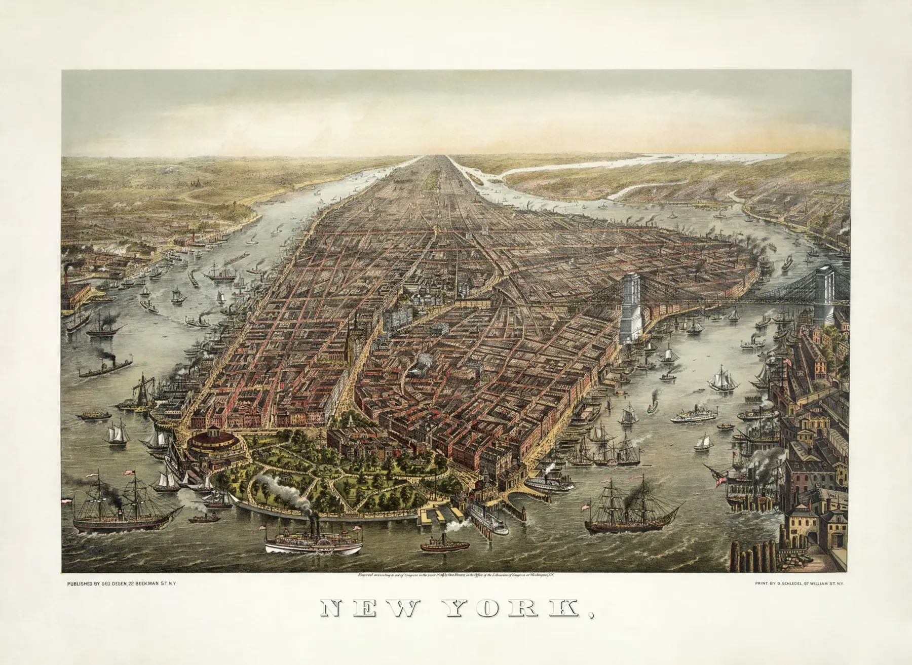

Invisible Histories
AN INTERACTIVE EXPLORATION OF NEW YORK CITY LANDMARKS
New York City is constantly changing and evolving. Buildings are both constructed and destroyed, honored and overlooked. Residents and visitors are surrounded by the symbols of the city, some being quite obvious while others are discreet.
But rarely do we consider the specific places and ideas that have shaped the city into what we experience today. Beneath the facades of familiar buildings and locations lie invisible histories which tell the stories of the growth of a city, and the unique lives of the people who utilized them.
This project presents a hand-picked selection of locations designated and preserved as New York City Landmarks by the Landmark Preservation Committee.
What can the landmarks of today reveal about the city’s past? Furthermore, what does the city feel is worth preserving and whose histories do we choose to remember?
Explore the map, select a landmark, and view them in a new light. Discover the invisible history embedded in these sites.
History is not what remains, it is what we choose to remember.